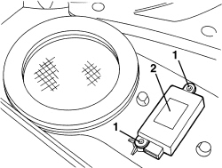

5580E50 ANTITHEFT DEVICE VOLUMETRIC SENSOR R R FOLLOWING ELECTRICAL CIRCUIT CHECK
- Path
- Procedures > 55 ELECTRICAL EQUIPMENT > 5580 SPECIAL ACCESSORIES > 5580E ANTI-THEFT DEVICE > 5580E50 ANTITHEFT DEVICE VOLUMETRIC SENSOR R R FOLLOWING ELECTRICAL CIRCUIT CHECK
- Kind
- repair procedure (removal / refitting; the operation number is the code)
- Applies to
- all engines; all production periods
- Interactive page
- https://sloeber94.github.io/elrnDB-aBrrSpdr/en/#/946002475
Applies to: all engines; all production periods
 Removing
Removing
 Refitting
RefittingOp. 7005E38 FRONT SIDE DOOR INTERIOR HANDLE- R.R.
Op. 7005M14 SWITCH UNIT ON DRIVER'S FRONT DOOR - R.R.
- Or, alternatively
Op. 7005M12 PASSENGER SIDE FRONT DOOR ELECTRICALLY OPERATED WINDOW SWITCH - R.R.
Op. 7040E24 LOWER COURTESY LIGHT IN DOOR PANEL - R+R
Op. 7005E12 CORNER COVER FOR ONE FRONT SIDE DOOR, LH OR RH - R.R.
Op. 7005E11 LH OR RH FRONT DOOR INNER PANEL - R+R WITH FOULING PARTS REMOVED
1. Working on the inner panel, undo the bolts.
2. Keep the hyperfrequency sensor.

Applies to: all engines; all production periods
Refitting
Removing- Check that the hyperfrequency sensor is not damaged.
- Position the sensor and secure it using the bolts.
Op. 7005E11 LH OR RH FRONT DOOR INNER PANEL - R+R WITH FOULING PARTS REMOVED
Op. 7005E12 CORNER COVER FOR ONE FRONT SIDE DOOR, LH OR RH - R.R.
Op. 7040E24 LOWER COURTESY LIGHT IN DOOR PANEL - R+R
Op. 7005M12 PASSENGER SIDE FRONT DOOR ELECTRICALLY OPERATED WINDOW SWITCH - R.R.
Op. 7005M14 SWITCH UNIT ON DRIVER'S FRONT DOOR - R.R.
Op. 7005E38 FRONT SIDE DOOR INTERIOR HANDLE- R.R.
- Check the operation of the alarm system.
Topics linked from this page (6)
- 7005E11 LH OR RH FRONT DOOR INNER PANEL - R+R WITH FOULING PARTS REMOVED
- 7005E12 CORNER COVER FOR ONE FRONT SIDE DOOR, LH OR RH - R.R.
- 7005E38 FRONT SIDE DOOR INTERIOR HANDLE- R.R.
- 7005M12 PASSENGER SIDE FRONT DOOR ELECTRICALLY OPERATED WINDOW SWITCH - R.R.
- 7005M14 SWITCH UNIT ON DRIVER'S FRONT DOOR - R.R.
- 7040E24 LOWER COURTESY LIGHT IN DOOR PANEL - R+R